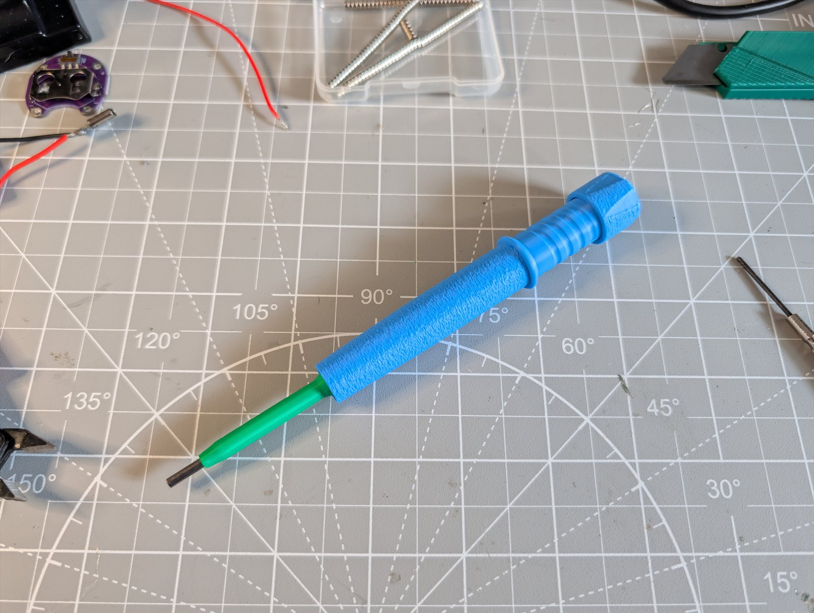
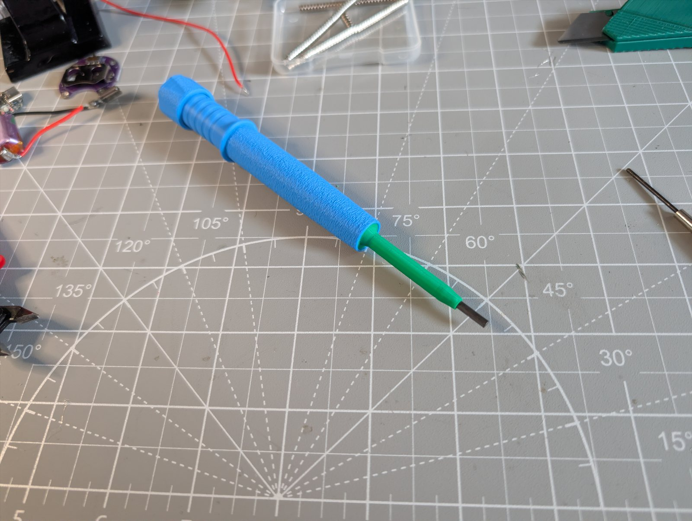
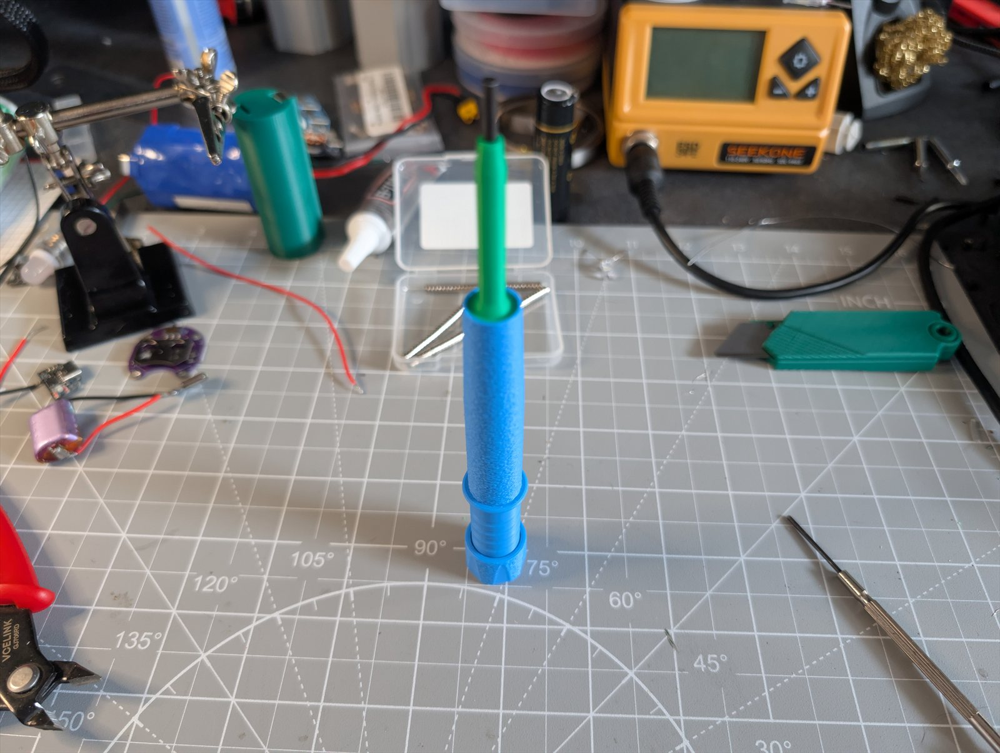

The $0 Mechanical Pencil
What It Is
NicPro makes nice mechanical pencils that use round 2.8mm HB lead. They run $20 to $40 depending on the model. I wanted to see if I could make a printable version that works just as well — no springs, no screws, no hardware of any kind. Just the printed parts and a stick of lead.

The body has a textured grip section and a tapered front end. Twist the barrel to advance the lead. The whole mechanism is print-in-place — nothing to assemble beyond dropping the lead in.
Status Updates


What's Next
Refining the internal tolerances to get rid of the play in the twist mechanism. If I can get the feel as smooth as the NicPro originals, this was worth the effort. Goal is a pencil that costs nothing but filament and works just as well as one that costs $30.